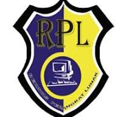

Halo, perkenalkan nama saya Indra Wibisana. Saya berumur 16 tahun, lahir pada tanggal 26 Desember 2007. Asli saya dari Kalimantan Tengah dan pindah ke Jawa saat berada di bangku SD. Walaupun sudah lumayan lama saya menetap, saya masih kurang tahu menahu dalam adat dan kebudayaan Jawa.
Saya masih baru dalam hal dunia perCodingan, saya baru menekuninya saat saya masuk ke sekolah kejuruan. Saya memilih jurusan Rekayasa Perangkat Lunak agar bisa mengeksplor dan mendapat bantuan dalam belajar Coding. Saya harap dengan bersekolah disini saya bisa menjadi jalan saya untuk sukses.
Saya tinggal di Desa Pandean, Kecamatan Mejayan, Kabupaten Madiun, Jawa Timur. Tempat saya tinggal sekarang terbilang nyaman karena lingkungannya asri dan bersih. Lingkungannya terbilang lengkap karena dekat dengan berbagai fasilitas, mulai dari fasilitas hiburan hingga fasilitas transportasi. Biaya hidupnya terjangkau karena banyak toko hingga penjual kelontong menjual barang dan jasanya dengan harga murah.
Ya, intinya lingkungan saya tinggal lingkungan tempat saya tinggal sangat cocok untuk saya. Karena rumah saya itu masuk kedalam gang gang kecil, membuat rumah saya tidak bising saat malam. Juga karena rumah saya berada di gang kecil bisa dibilang tidak ada halaman yang cukup besar untuk parkir kendaraan apalagi untuk mobil, karena mobil tidak muat untuk masuk kedalam gang tersebut.

RPL adalah singkatan dari Rekayasa Perangkat Lunak dan merupakan sebuah jurusan yang ada di Sekolah Menengah Kejuruan (SMK). RPL adalah sebuah jurusan yang mempelajari dan mendalami semua cara-cara pengembangan perangkat lunak termasuk pembuatan, pemeliharaan, manajemen, organisasi pengembangan perangkat lunak dan manajemen kualitas. Bukan hanya itu RPL juga berhubungan dengan software komputer mulai dari pembuatan website, aplikasi, game dan semua yang berhubungan dengan pemograman dengan menguasai bahasa pemograman tersebut. Intinya RPL tidak akan jauh-jauh dari tiga hal yaitu coding, Desain dan Algoritma yang akan menjadi kunci keberhasilan rekayasa perangkat lunak tersebut.
Dikarenakan jurusan ini jurusan yang berkaitan dengan teknologi saya berharap jurusan ini terus berkembang, mengingat sekarang teknologi selalu melekat pada manusia entah itu memiliki bentuk fisik(hardware) atau tidak(software). Yang pastinya jurusan ini sangat besar potensinya kedepan dan bisa dikombinasikan dengan beberapa teknik keahlian lain seperti elektronika maupun otomotif, disini saya juga berharap untuk adanya kolaborasi jurusan ini dengan jurusan-jurusan lain untuk melatih siswa dalam hal kerjasama dan juga mengaplikasi keahlian yang didapat pada hal hal lainnya, agar dapat menjadi SDM yang berkualitas.
Karna saya juga sedang menjalani pembelajaran pada jurusan RPL ini saya ingin memberikan nasihat, walaupun juga saya masih sangat baru dalam hal ini, semoga ini dapat memberikan semangat tambahan dalam hidup orang yang membaca ini. Berikut nasihat saya:
"jangan pernah menyerah dalam hal kebaikan, walaupun itu sulit tetaplah dalam jalan kebenaran"
| https://wa.me/qr/L3JN4TJETDTRD1 | |
| https://web.facebook.com/idr.ind.1 | |
| https://www.instagram.com/orang_laksek/ |